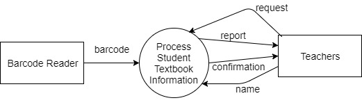
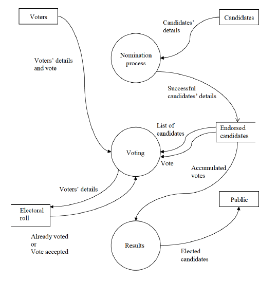
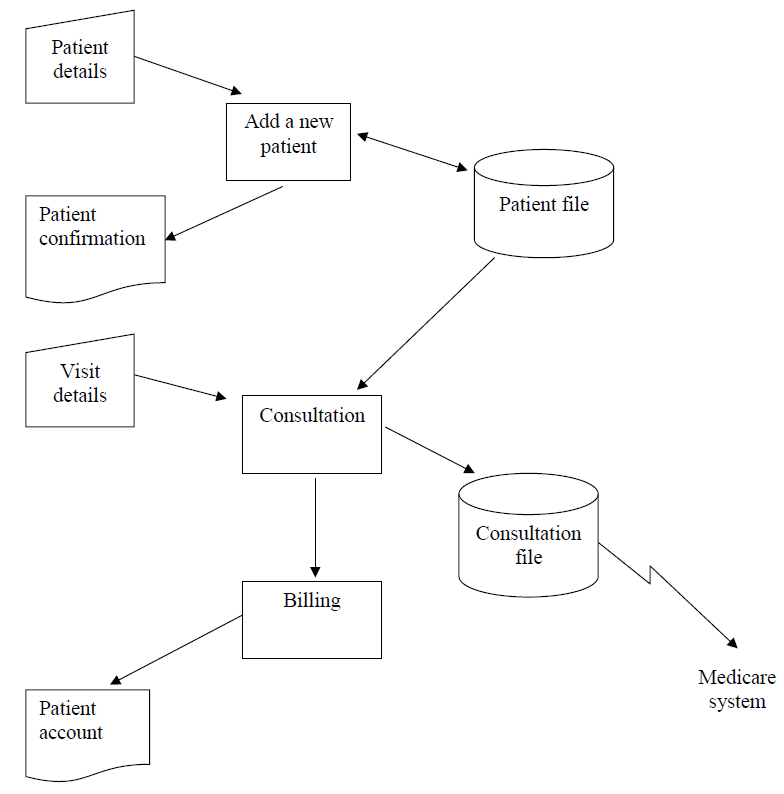
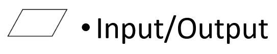
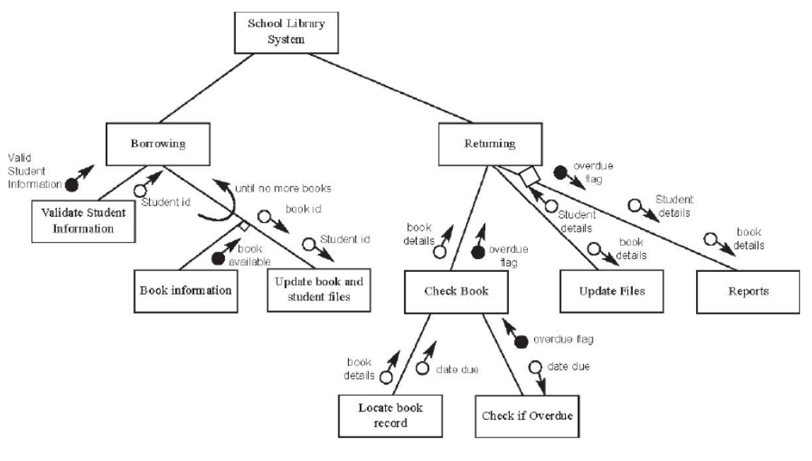

Useful notes made by other students:
SDD Accelerated HSC Notes 2022-compressed.pdf SDD Notes - From class of 2015.pdf SDD Notes - MrBrightside.pdf
Indigo’s Docs
(Online)
- edit
- edit#heading=h.5q4t78orcivm (Local - 3/8/2023)
- Pseudocode and Flowchart Cheatsheet.pdf
Need to Know
-
Identifying Issues in Pseudocode
-
System/Solution Models
- Flashcards
- What are the different ways to model a system?;
Context Diagram (AKA Data Flow DiagramLevel 0)
Data Flow Diagram(AKA Data Flow DiagramLevel 1)
System Flow Chart
Structure Chart
IPO Chart
Data Dictionary
Screen Design
Storyboards
-
Flow Chart
-
Sorting Algorithms
- Quick Sort
- Recognising from Consecutive Sort Steps
-
Searching Algorithms
- Searching Algorithm 1;; Sequential
- Searching Algorithm 2;; Binary
-
Streams (start and end)(parity)
- The Data Stream sections are;; The Header, the Data Block, and the Trailer Information
- Trailer Information
- Parity Bit Infomation
- The Trailer Information Contains;; Error checking bits and a stop bit
- What are the differences between odd and even parity bits?;;
Even Parity − Here the total number of 1 bits in the message is made even.
Odd Parity − Here the total number of 1 bits in the message is made odd. - What is the value of an even parity bit in a data stream if the number of 1’s is even;; 0
- What is the value of an even parity bit in a data stream if the number of 1’s is odd;; 1
- What is the value of an odd parity bit in a data stream if the number of 1’s is even;; 1
- What is the value of an odd parity bit in a data stream if the number of 1’s is odd;; 0
- What is the value of an even parity bit in a data stream if the number of 0’s is even;; 1
- What is the value of an even parity bit in a data stream if the number of 0’s is odd;; 0
- What is the value of an odd parity bit in a data stream if the number of 0’s is even;; 0
- What is the value of an odd parity bit in a data stream if the number of 0’s is odd;; 1
-
Software Development Cycle
- Flashcards
- Software Development Cycle Stage 1;; Defining and Understanding the Problem
- Determine the requirements of the system and needs of client
- Study existing systems and consult with users
- Feasibility study undertaken
- Design specifications are made
- Development plan is constructed
- Software Development Cycle Stage 2;; Planning and Designing the Solution
- Design of data structures
- Algorithms are created
- Interface design in consultation with client
- Project is broken down into modules
- Software Development Cycle Stage 3;; Implementing the Solution
- Solution is coded in a programming language
- Each module is tested as it is coded and then tested in combination with others
- Documentation is made
- Software Development Cycle Stage 4;; Testing and Evaluating the Solution
- Testing for errors as well as performance under live conditions
- Evaluate the system to ensure that all requirements have been met
- Software Development Cycle Stage 5;; Modifying/Maintaining the Solution
- Upgrading to correct errors, add new functionality, improve current functionality
- Each modification uses the steps of the software development cycle
-
Installation Methods
- Flashcards
- Direct cut-over
- Old system is dropped and new system installed at the same time.
- Used when not feasible to run both systems at the same time
- Data must be converted and imported from old system.
- Users must be trained on new system prior to installation
- Parallel
- Both systems operate together for a period of time.
- Allows major problems with new system to be sorted without loss of data
- Users have time to familiarise themselves with new system.
- Used when system is crucial
- Phased
- Gradual change from old system to new.
- New product introduced one part at a time
- Often used when product is still under development.
- Pilot
- New system is initially installed for a small number of users.
- Users can test system - often considered final test
- Users can learn system so they can teach others
-
Rights of software developers
- Categories of the Rights of software developers;; Intellectual Property, and Quality
- What is Intellectual Property?; Property resulting from mental labour
- Intellectual Property Rights of Developers; work must be acknowledged and fairly compensated by publishers
- Developer Rights Regarding Quality; Developer has the right to expect that the hardware and operating systems both operates reliably.
-
Responsibilities of software developers
- Categories of the responsibilities of software developers; Intellectual Property, Quality, Response to Problems, Malware
- Intellectual Responsibilities of developers; Developers have the responsibility to acknowledge the work of others.
- What are the factors which determine a software’s quality?; reliability, integrity of data, efficiency, + more
- Responsibilities of the Developer Related to Quality; Solutions should be high quality (especially when involving important data) to reduced the inconvenience of errors
- How is the quality of software ensured?; Through planning, testing, and QA (eg. Discussion with client to ensure software is satisfactory)
- Responsibilities of the Developer Related the Response to Problems; timely, accurate, and efficient response to problems
- How can a Software Developer Ensure a timely, accurate, and efficient response to problems?; Have a method to assist identification and resolution of errors. Have unambiguous error messages. Have a way to respond to user problems such as a support department
- Responsibilities of the Developer Related Malware; Ensure their products do not generate, feature, or transmit malware.
- How can a Software Developer ensure that their products do not generate, feature, or transmit malware?; Check new data and software added for viruses. Scan all emails and attachments received by employees. Update antivirus software regularly. Scan all software before distribution. Use firewalls and other security mechanisms.
-
- Compilation
- Interpretation
- Incremental Compilation
-
CASE tools
-
Software licenses
-
CPU instructions
-
Fetch Execute Cycle
-
Relative files
-
Sequential files pseudo code
-
Binary
- Is 0 True or False?;; False
- is 1 True or False?;; True
- What is the binary digit representation of False?;; 0
- What is the binary digit representation of True?;; 1
The steps / actions that are a part of the ‘Defining and Understanding the Problem’ Software Development Cycle stage are: ?
- Determine the requirements of the system and needs of client
- Study existing systems and consult with users
- Feasibility study undertaken
- Design specifications are made
- Development plan is constructed
The following steps / actions are a part of which Software Development Cycle:
^0d76f8
- Design of data structures
- Algorithms are created
- Interface design in consultation with client
- Project is broken down into modules ? 2 - Planning and Designing the Solution
The steps / actions that are a part of the ‘Planning and Designing the Solution’ Software Development Cycle stage are: ?
- Design of data structures
- Algorithms are created
- Interface design in consultation with client
- Project is broken down into modules
The following steps / actions are a part of which Software Development Cycle:
^0d76f8
- Solution is coded in a programming language
- Each module is tested as it is coded and then tested in combination with others
- Documentation is made ? 3 - Implementing the Solution
The steps / actions that are a part of the ‘Implementing the Solution’ Software Development Cycle stage are: ?
- Solution is coded in a programming language
- Each module is tested as it is coded and then tested in combination with others
- Documentation is made
The following steps / actions are a part of which Software Development Cycle:
^0d76f8
- Testing for errors as well as performance under live conditions
- Evaluate the system to ensure that all requirements have been met ? 4 - Testing and Evaluating the Solution
The steps / actions that are a part of the ‘Testing and Evaluating the Solution’ Software Development Cycle stage are: ?
- Testing for errors as well as performance under live conditions
- Evaluate the system to ensure that all requirements have been met
The following steps / actions are a part of which Software Development Cycle:
^0d76f8
- Upgrading to correct errors, add new functionality, improve current functionality
- Each modification uses the steps of the software development cycle ? Modifying/Maintaining the Solution
The steps / actions that are a part of the ‘Modifying/Maintaining the Solution’ Software Development Cycle stage are: ?
- Upgrading to correct errors, add new functionality, improve current functionality
- Each modification uses the steps of the software development cycle
Methods of Installation
What are the installation methods? ?
- Direct Cut-Over
- Parallel
- Phased
- Pilot
What is the Direct Cut-Over Installation method? ?
- Old system is dropped and new system installed at the same time.
- Used when not feasible to run both systems at the same time
- Data must be converted and imported from old system.
- Users must be trained on new system prior to installation
Which Method of Installation is described by the following characteristics?
- Old system is dropped and new system installed at the same time.
- Used when not feasible to run both systems at the same time
- Data must be converted and imported from old system.
- Users must be trained on new system prior to installation ? Direct Cut-Over
What is the Parallel Installation method? ?
- Both systems operate together for a period of time.
- Allows major problems with new system to be sorted without loss of data
- Users have time to familiarise themselves with new system.
- Used when system is crucial
Which Method of Installation is described by the following characteristics?
- Both systems operate together for a period of time.
- Allows major problems with new system to be sorted without loss of data
- Users have time to familiarise themselves with new system.
- Used when system is crucial ? Parallel
What is the Phased Installation method? ?
- Gradual change from old system to new.
- New product introduced one part at a time
- Often used when product is still under development.
Which Method of Installation is described by the following characteristics?
- Gradual change from old system to new.
- New product introduced one part at a time
- Often used when product is still under development. ? Phased
What is the Pilot Installation method? ?
- New system is initially installed for a small number of users.
- Users can test system - often considered final test
- Users can learn system so they can teach others
Which Method of Installation is described by the following characteristics?
- New system is initially installed for a small number of users.
- Users can test system - often considered final test
- Users can learn system so they can teach others ? Pilot
System/Solution Models
Context Diagram
What is a Context Diagram? ?  ^63d7e2
- A Context Diagram is used to represent an overview of the system.
- It does not show sequence of events but order can be implied based on scenario
What type of diagram is depicted in the following image? ? Context Diagram
In a Context Diagram, what shape is used to represent external entities?; A circle
In a Context Diagram, what shape is used to represent processes?; A rectangle
Are flow direction arrows required on a Context Diagram?; Yes
Are data labels required on a Context Diagram?; Yes
Are databases needed in a Context Diagram?; No
Can Context Diagramlines be curved?; Yes
Does a Context Diagram show the sequence of operations?; No
Data Flow Diagram
What is a Data Flow Diagram? ? 
- Represents the system as a number of processes, External Entities and Data stores.
- A Data Flow Diagram is a refinement of a Context Diagramused to show the sources and destinations of data along with the flow the data takes between processes
What symbols are used in Data Flow Diagrams? ?
- Circles for processes
- Rectangles for external entities
- 3 sided rectangles for data stores.
Do the lines in Data Flow Diagrams need arrows indicating the direction of data flow?; Yes
Can the lines in Data Flow Diagrams be curved?; Yes
Do Data Flow Diagrams need labels for the data?; Yes
Can Data Flow Diagrams have two directional arrows?; No
Can a data store in a Data Flow Diagram be a non-computer storage file e.g. Paper folder?; Yes
Does a Data Flow Diagramshow the sequence of operations?; No
System Flow Chart
What is a System Flow Chart ? 
- Shows the flow of data
- Shows the individual system modules
- Shows the media used
Can the lines in System Flow Charts be curved?; No
Do the lines in System Flow Charts need arrows to indicate direction of flow?; Yes
Can the lines in System Flow Charts have two directional arrows? (on line with an arrow on each end); Yes
What is the symbol used in System Flow Charts to indicate ‘input and output’? ? Parallelogram 
What is this symbol used to indicate in System Flow Charts?
 ?
Input and Output
?
Input and Output
What is the symbol used in System Flow Charts to indicate ‘Paper Document’?
?
Rectangle with a squiggly base

What is this symbol used to indicate in System Flow Charts?
 ?
Paper document
?
Paper document
What is the symbol used in System Flow Charts to indicate ‘online display’?
?
Left angle bracket with two lines to coming of the top and bottom of the angled bracket to connect it to a right parenthesise.

What is this symbol used to indicate in System Flow Charts?
 ?
Online Display
?
Online Display
What is the symbol used in System Flow Charts to indicate ‘online input’?
?
Rectangle with a positively slanted top.

What is this symbol used to indicate in System Flow Charts?
 ?
Input and Output
?
Input and Output
What is the symbol used in System Flow Charts to indicate ‘punched card’?
?
Rectangle with the top left corner cut off.

What is this symbol used to indicate in System Flow Charts?
 ?
Punched Card
?
Punched Card
What is the symbol used in System Flow Charts to indicate ‘process’?
?
Rectangle

What is this symbol used to indicate in System Flow Charts?
 ?
Process
?
Process
What is the symbol used in System Flow Charts to indicate ‘manual operation’?
?
Point down isosceles triangle with the point cut off

What is this symbol used to indicate in System Flow Charts?
 ?
Manual Operation
?
Manual Operation
What is the symbol used in System Flow Charts to indicate ‘Magnetic Tape’?
?
Circle with the base extruded into a rectangle that vertically aligns to the right side of the circle.

What is this symbol used to indicate in System Flow Charts?
 ?
Magnetic Tape
?
Magnetic Tape
What is the symbol used in System Flow Charts to indicate ‘Disk Drive’?
?
Cylinder viewed from a front-top angle

What is this symbol used to indicate in System Flow Charts?
 ?
Disk Drive
?
Disk Drive
What is the symbol used in System Flow Charts to indicate ‘Decision’?
?
Diamond

What is this symbol used to indicate in System Flow Charts (apparently largly depricated / unused ?
 ?
Decision
?
Decision
What is the symbol used in System Flow Charts to indicate ‘Telecommunications’?
?
An elongated ‘Z’

What is this symbol used to indicate in System Flow Charts?
 ?
Telecommunications
?
Telecommunications
Structure Chart
What is a Structure Chart? ? System model to represent the separate modules and subroutines and their relationships to one each other 
Can Structure Charts have curved lines?; No
Do Structure Charts need arrows to indicate direction of data flow?; No
What is the symbol used to represent a module in a Structure Chart?; Rectangle
How is data movement represented in a structure chart?; By Labelled Parameters
How are parameters represented in Structure Charts?; As small not filled in circles with connected arrows indicating the direction of data movement. Text labels are next to each parameter to describe the data.
What are parameters in Structure Charts?; Data movement variables that are parsed between subroutines.
What are flags in Structure Charts?; A control parameter. Like a normal parameter but can only be a Boolean value.
How are flags represented in Structure Charts?; As filled in circles with a connected arrow indicating the direction that the flag is being passed. Has a text label to describe the flag.
How are optional subroutine / module calls represented in Structure Charts?; As Diamonds overlaying the connection line.
How are binary decisions represented in Structure Charts?; as a right angle symbol between the two connection lines of the models/processes that follow the decision.
How are loops / repetition represented in structure charts?; As an arced arrow forming half an oval around the connection line or lines.
IPO Chart
What is an IPO Chart?
?

- An IPO (Input, Process, Output) Chart is a way of documenting the data in a system.
- The Input for each major process is recorded
- Major processors are described
- The outputs to the major processes are recorded
Can an IPO Charts process section have multiple instructions?; Yes. Describes all the instructions in the process
Are the data types of inputs and outputs required in an IPO Chart?; No
Data Dictionary
What is a Data Dictionary? ?
- A Data Dictionary contains a comprehensive description of each data item in the system
- Commonly Required Fields:
- Data Item (Variable name)
- Data Type
- Format
- Number of Bytes Required for Storage
- Size for Display
- Description
- Example
- Other Data Fields:
- Validation

- Validation
What are the fields required in a Data Dictionary? ?
- Data Item (Variable name)
- Data Type
- Format
- Number of Bytes Required for Storage
- Size for Display
- Description
- Example
How many commonly required fields in a Data Dictionary? ? 7:
- Data Item (Variable name)
- Data Type
- Format
- Number of Bytes Required for Storage
- Size for Display
- Description
- Example
Screen Design
What is a Screen Design? ?
- A depiction of the design and layout of the user interface
- Focus on usability and making user interactions as simple as possible.
- Should use common interface elements. e.g. checkboxes
- Consider the screen size and dimensions
- Identify the required data fields and screen elements along with their placement.
- Should be consistent
- May use labels with arrows to provide description of elements such as colour, images, or text font

Storyboard
What is a storyboard? ?
- Shows the interfaces (screens) in a system and the links between them
- Input and output areas should be clearly defined
- Navigation elements such as buttons should be clearly defined
- Linking lines should originate from the element that triggers the change in screen
- Should be detailed enough to determine purpose

How are the links between screens in a storyboard depicted?; With straight arrows between the button that directs you to the screen and the screen.
Can you use labels to indicate moving to a screen that is incontinent to connect to. e.g. (back to home screen); Yes
Can you have labels next to screens in a storyboard to indicate extra information about the screen?; Yes
Table Config
Development Approaches Table
| Development Approach | Characteristics | Suited for |
|---|---|---|
| Structured | 5 stages, detailed planning, large team, long timeline | Large, complex projects with high budget and time |
| Agile | Fast, iterative, small team with client, planning as needed | Software that is regularly modified and updated |
| Prototyping | Client involvement, successive prototypes | UI/user-focused projects, unique needs/small budget |
| RAD | Fast, cheap, uses existing modules, client involvement | Low budget, small scale projects, quick timeline |
| End-User | End user developer, cheap, fast, no documentation | Small long-term projects for the end user |